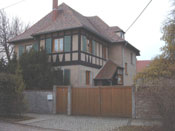
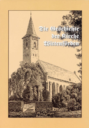
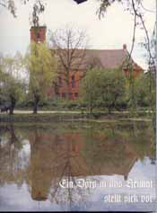

|
|
|
Die Bücher von Brigitte Hamann, die mir erst seit kurzem bekannt sind, sind ein unvergleichliches Kleinod. Diese Bücher mit ihrem unnachahmlichem Schriftstil machen sie so unvergleichlich wertvoll, weil hier Geschichte zum ersten Mal nachvollziehbar und weitestgehend vom Mythos und Legenden befreit sind und - was noch weitaus wichtiger ist - endlich auch ohne "Studium" oder Vorkenntnisse lesbar sind.
 Pfarrhaus von EL  
|
Geschichte
ist eine Wissenschaft,
die nicht ewig hält.
In der Schule war Geschichte - schon wegen des stupiden Abfragens von Jahreszahlen lange nicht "mein Ding" gewesen. Aber mit der sich immer weiter ausbreitenden Ahnenforschung, mit der Erkenntnis, dass sich das Schicksal der Menschen nur über die Heimatgeschichte und darüber hinaus der "Weltgeschichte" bedingt und erschließen und vor allem auch verstehen lässt, haben sich die alten Ressentiments verflüchtigt und neuem Interesse Platz gemacht. Ein immer währendes Studium von lokalgeschichtlichen Büchern, von Heimatchroniken und Aufsätzen oder Büchern über geschichtliche Ereignisse werden mir die notwendigen Hindergründe für das Leben meiner Vorfahren geben.
Dabei fällt mir eine lustige Begebenheit ein: Wir waren zur
Kirchenbucheinsichtnahme zu Gast in einer Pfarrei eines kleinen
thüringischen Ortes. Der Pfarrer war sehr nett und lud uns völlig
unerwartet zum Mittagessen ein. Das förderte natürlich unsere
gegenseitigen Mitteilungen aus unserem jeweiligen Erfahrungsschatz und aus
unserem Leben. Als Dank für dieses weit darüber hinaus entgegengebrachte
Verständnis fragten wir den Pfarrer. ob er von einigen seiner durch ihn
betreuten Gemeinden auch eine Ortschronik besäße. So erfuhren wir, dass er
just von dem Ort, von dem uns eine Chronik vorlag keine hatte und er sagte
verschmitzt: "Sie haben wohl von jedem kleinen Nest eine Chronik?" Dienstlich habe ich bei der Erarbeitung nachfolgender Zusammenstellungen und Publikationen mitgewirkt: (bei Interesse wenden Sie sich bitte direkt an: a.ende@grundschule-wittenfoerden und schauen Sie auch in unserer Wittenfördener Home Page unter: www.wittenfoerden.de vorbei)
"Kreiserntefest in Wittenförden" vom 21. - 23.9.2001 Nachlese von Gerda Nemitz und Angelika Ende (Achtung bei 6,7 MB hohe Ladezeit des pdf-Dokuments)
FFW Wittenförden" - ein chronologischer Abriss über die Geschichte der
Wittenfördener Feuerwehr (Achtung pdf-Dokument 1 MB - Ladezeit beachten)
"Erinnerungen an die Jahre unserer Kindheit in Wittenförden" -
Lausbubengeschichten aufgeschrieben von Fritz VOLKMANN und auf Nachfrage zum Preis von 10 € (plus Porte) erhältlich (Dateigröße im pdf-Format: 2 MB)
Namensgebung "Dr.-Otto-Steinfatt" an die Wittenfördener Schule (9 Seiten = 1,5 MB)
"Schulchronik aus der über 350-jährigen Schulgeschichte
Wittenfördens - Schule früher und heute" 112 Seiten - gebundenes Exemplar mit vielen Fotos (schwarz-wei0) auf Nachfrage zum Preis von 15 € (plus Porte) erhältlich auf Wunsch auch als CD erhältlich
Die 260seitige Kirchenchronik "Die Geschichte der Kirche von
Wittenförden" - von Gerda Nemitz und Angelika Ende - kann
zum Preis von 25,00 Euro in der Grundschule Wittenförden bei Frau Ende
täglich in der Zeit von 7.30 Uhr bis 11.30 Uhr erworben werden.
"Wittenförden - ein Dörp in uns Heimat" - eine Liebeserklärung an Wittenförden von Gerda Nemitz und Rudolf Wissel schön gestaltetes Buch - auf Nachfrage für 10 € plus Porto erhältlich
|